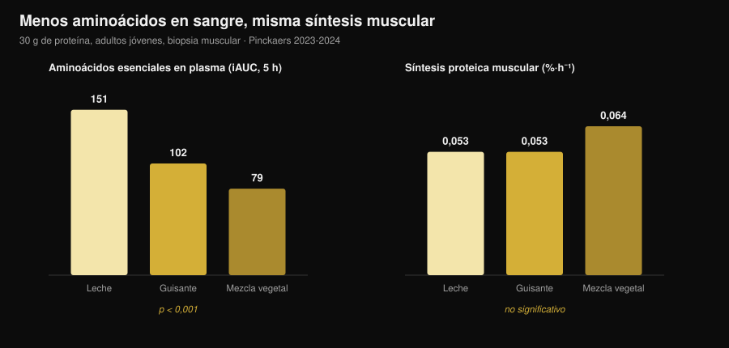
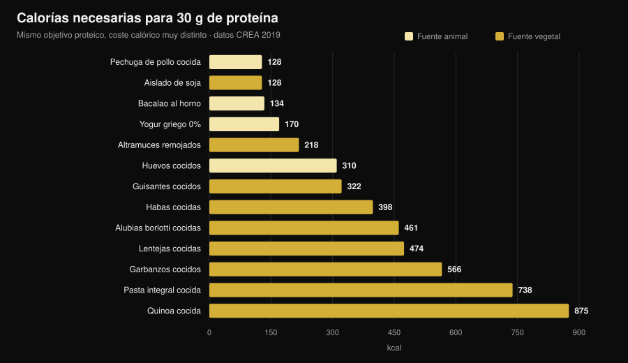

¿Proteína vegetal o animal para el músculo?
"La proteína vegetal es incompleta, no construye músculo." Es una de las frases más repetidas en cualquier gimnasio, y el mecanismo que hay detrás parece sólido: menos leucina, menos síntesis proteica. Luego alguien fue a medirlo de verdad, con biopsias musculares, y el resultado no es el que esperarías. Pero hay un segundo número que casi nadie pone sobre la mesa, y ahí es donde la decisión se vuelve concreta.

En resumen
- Cinco ensayos con biopsia muscular, cinco empates. Treinta gramos de proteína de guisante, trigo, maíz, patata o de una mezcla vegetal producen la misma síntesis proteica muscular que 30 g de proteína de leche (grupo de Maastricht, 2021-2024).
- El mecanismo de "hace falta más leucina" no supera la prueba. Con la mezcla vegetal los aminoácidos esenciales en sangre son casi la mitad (iAUC 79 frente a 151) y la síntesis es idéntica.
- A largo plazo, lo mismo. Cuatro ensayos de 10 a 16 semanas en veganos, mujeres vegetarianas y mezclas vegetales no encuentran diferencias en masa, grosor muscular ni fuerza.
- El metaanálisis más grande sí ve una pequeña ventaja animal (DME −0,20 en masa muscular), pero procede de fuentes vegetales distintas de la soja y de dietas íntegramente vegetales, no de la comparación soja/leche.
- El coste real son las calorías. Para 30 g de proteína hacen falta 99 g de pechuga de pollo y 128 kcal, o 435 g de lentejas cocidas y 474 kcal (tablas CREA). Casi cuatro veces más energía.
De dónde viene la duda
La proteína no es un bloque único: es una cadena de aminoácidos, y nueve de ellos el cuerpo no sabe fabricarlos (los esenciales). Uno en particular, la leucina, funciona como un interruptor: por encima de cierta concentración en sangre enciende la maquinaria que construye proteína muscular.
Las fuentes vegetales, de media, tienen menos leucina y menos aminoácidos esenciales por gramo que la carne, los huevos, el pescado y los lácteos, y varias se digieren algo peor. De ahí la conclusión lógica: menos leucina → menos síntesis → menos músculo.
El razonamiento es correcto. El problema es que un razonamiento correcto no es un resultado: hay que medirlo.
El experimento que lo mide de verdad
Entre 2021 y 2024 el grupo de Luc van Loon, en la Universidad de Maastricht, publicó cinco ensayos aleatorizados a doble ciego con el mismo diseño: adultos jóvenes, infusión de fenilalanina marcada, biopsias musculares repetidas durante 5 horas, 30 g de proteína vegetal frente a 30 g de proteína de leche.
| Proteína vegetal probada | Síntesis vegetal | Leche | Resultado |
|---|---|---|---|
| Trigo (Pinckaers 2021) | 0,056 %·h⁻¹ | 0,053 %·h⁻¹ | p = 0,56 |
| Patata (Pinckaers 2022) | 0,053 %·h⁻¹ | 0,050 %·h⁻¹ | p = 0,54 |
| Mezcla trigo+maíz+guisante (Pinckaers 2023) | 0,064 %·h⁻¹ | 0,053 %·h⁻¹ | p = 0,08 |
| Guisante (Pinckaers 2024) | 0,053 %·h⁻¹ | 0,053 %·h⁻¹ | p = 0,96 |
| Maíz (Pinckaers 2024) | 0,053 %·h⁻¹ | 0,053 %·h⁻¹ | p = 0,90 |
Cinco fuentes vegetales distintas, cinco empates. Y en el estudio de la patata la medición se hizo también después de una sesión de pesas: 0,069 frente a 0,064 %·h⁻¹ a favor de la patata, p = 0,52. Incluso en la condición que le interesa a quien entrena, ninguna diferencia.

El gráfico enseña el dato que desmonta el mecanismo. Los aminoácidos esenciales que llegan a la sangre en las 5 horas posteriores (iAUC) son 151 mmol·300 min·L⁻¹ con leche, 102 con guisante y 79 con la mezcla vegetal: una diferencia enorme y muy sólida (p < 0,001 en ambas comparaciones). La síntesis muscular, en cambio, no se mueve.
Traducido: con 30 gramos de proteína, el umbral ya está superado en todos los casos. El "pico de leucina" cuenta cuando la dosis es pequeña; en una ración real deja de decidir.
¿Y a lo largo de los meses?
La síntesis medida en 5 horas es un indicio, no un resultado. El músculo se ve en meses. Aquí hay cuatro ensayos y conviene leerlos juntos.
Veganos frente a omnívoros, 12 semanas (Hevia-Larraín 2021, Sports Medicine). Diecinueve veganos habituales y 19 omnívoros, proteína llevada a 1,6 g por kg al día con soja de un lado y whey del otro, dos sesiones supervisadas por semana. Masa magra de la pierna +1,2 kg en ambos grupos; sección del recto femoral +1,0 frente a +0,9 cm²; 1RM en prensa +97 frente a +117 kg. Ninguna diferencia significativa.
Dieta vegana alta en proteína, 10 semanas (Monteyne 2023, Journal of Nutrition). Programa de volumen alto, 5 sesiones semanales, unos 2 g/kg. Masa magra +2,6 kg en omnívoros y +3,1 kg en el grupo vegano; volumen del muslo +8,3% en ambos; sección de las fibras +33% frente a +32%.
Mezcla vegetal frente a whey, 12 semanas (Santini 2025, JISSN). Cuarenta y cuatro chicos no entrenados, 45 g diarios de suplemento repartidos en tres comidas. Masa magra total +2,4 frente a +2,5 kg, sección del vasto lateral +0,9 frente a +1,3 cm², 1RM en prensa +64 frente a +63 kg. Ninguna diferencia significativa entre grupos.
Mujeres vegetarianas estrictas, 16 semanas (Martini 2026, Scandinavian Journal of Medicine & Science in Sports). Veinticinco vegetarianas y 20 no vegetarianas, dos sesiones semanales, sin suplementación. Grosor del muslo de 81,2 a 85,6 mm frente a 80,8 a 87,3 mm; fuerza máxima compuesta de 106,9 a 132,6 kg frente a 107,9 a 133,1 kg. Sin diferencias entre grupos, y eso que las vegetarianas comían menos proteína: 1,0 frente a 1,3 g/kg (p = 0,002).
Este último dato es a la vez el más interesante y el más frágil: es un estudio no aleatorizado (nadie elige al azar ser vegetariano) en mujeres no entrenadas, así que no autoriza a decir que 1 g/kg baste para quien entrena duro.
Por qué los metaanálisis dicen algo algo distinto
La revisión sistemática más amplia (Reid-McCann 2025, Nutrition Reviews, 43 ensayos aleatorizados, 30 en el metaanálisis) encuentra que, frente a la proteína animal, la vegetal deja menos masa muscular: DME −0,20 (IC 95% −0,37 / −0,03; p = 0,02), con el efecto concentrado en los menores de 60 años y ausente por encima.
Pero la misma análisis, desglosada, dice exactamente dónde está la diferencia:
- soja frente a proteína de leche: ninguna diferencia (DME −0,02; IC −0,20 / 0,16; p = 0,80), en 17 ensayos;
- animal frente a vegetales distintos de la soja (arroz, chía, avena, patata): −0,58 (IC −1,06 / −0,09), en 5 ensayos;
- animal frente a dietas íntegramente vegetales: −0,51 (IC −0,91 / −0,11), en 7 ensayos;
- fuerza muscular: ninguna diferencia (14 ensayos). Rendimiento físico: ninguna diferencia (5 ensayos).
El metaanálisis previo (Lim 2021, Nutrients, 16 ensayos) llega al mismo sitio: ningún efecto de la fuente sobre masa magra absoluta y fuerza, pequeña ventaja animal en el porcentaje de masa magra y, en menores de 50 años, +0,41 kg (IC 0,08-0,74).
La lectura honesta: la diferencia existe, es pequeña, afecta a la masa y no a la fuerza, y desaparece cuando se comparan dos proteínas aisladas de calidad. Donde reaparece es en las dietas íntegramente vegetales, es decir, cuando el problema ya no es la calidad sino la cantidad que se consigue comer.
El problema real: la factura calórica
He tomado las tablas de composición de alimentos del CREA y calculado cuánta comida, y con cuántas calorías, hace falta para llegar a 30 g de proteína, la ración usada en todos los estudios anteriores.

| Alimento (tal como se come) | Gramos para 30 g de proteína | kcal | Fibra |
|---|---|---|---|
| Pechuga de pollo cocida | 99 g | 128 | 0 g |
| Aislado de proteína de soja | 35 g | 128 | 0 g |
| Bacalao al horno | 171 g | 134 | 0 g |
| Yogur griego 0% | 333 g | 170 | 0 g |
| Altramuces remojados | 183 g | 218 | 5 g |
| Huevos cocidos (≈5) | 242 g | 310 | 0 g |
| Guisantes cocidos | 309 g | 322 | 20 g |
| Habas secas peladas cocidas | 273 g | 398 | 8 g |
| Alubias borlotti cocidas | 435 g | 461 | 30 g |
| Lentejas cocidas | 435 g | 474 | 36 g |
| Garbanzos cocidos | 429 g | 566 | 25 g |
| Pasta integral cocida | 405 g | 738 | 14 g |
| Quinoa cocida | 625 g | 875 | 23 g |
Una comida de 30 g de proteína cuesta 128 kcal con pollo y 474 kcal con lentejas. Si haces tres al día, la diferencia supera las 1.000 kcal: en definición es sencillamente imposible, y en mantenimiento llena el plato de hidratos que quizá querías gastar en otra cosa.
Y luego está el volumen: 435 g de lentejas cocidas son dos platos llenos y traen 36 g de fibra, más del doble de la recomendación diaria de una sentada. No es un problema de salud, es un problema de estómago y de logística.
Dos excepciones merecen atención, y son justo las que cierran el círculo con los ensayos. El aislado de proteína de soja cuesta 128 kcal por 30 g de proteína, exactamente igual que la pechuga de pollo: es la proteína vegetal que nunca pierde contra la leche en los metaanálisis. Y los altramuces se quedan en 218 kcal: el mejor alimento vegetal entero de la tabla.
Si estás ajustando la proteína en déficit, el razonamiento es el mismo que vimos al hablar de cuánta proteína hace falta en definición: no cambia el gramo, cambia lo que viene con él.
Qué dice realmente la investigación
"la proteína vegetal no activa la síntesis muscular como la animal". Cinco ensayos con biopsia, cinco empates: trigo p = 0,56, patata p = 0,54, guisante p = 0,96, maíz p = 0,90, mezcla p = 0,08 (a favor del vegetal).
"sin suficiente leucina no se construye músculo". Con la mezcla vegetal los aminoácidos esenciales en sangre son un 48% más bajos (79 frente a 151 iAUC, p < 0,001) y la síntesis es idéntica.
"siendo vegetariano o vegano no puedes crecer". Cuatro ensayos de 10 a 16 semanas sin diferencias en masa, grosor, sección ni fuerza.
"la fuente no cuenta en absoluto". El metaanálisis más grande encuentra DME −0,20 en masa en contra de lo vegetal, concentrado en menores de 60. Pequeño, pero no cero.
"basta con comer más proteína vegetal". Sobre el papel sí; en el plato esa proteína llega con 3-4 veces las calorías y mucha más fibra.
"la soja aguanta la comparación con la leche". En 17 ensayos aleatorizados, DME −0,02 (IC −0,20 / 0,16): indistinguible de cero.
"la soja baja la testosterona en los hombres". Metaanálisis de 41 estudios clínicos, testosterona total medida en 1.753 hombres: ningún efecto sobre testosterona total y libre, estradiol, estrona ni SHBG, a cualquier dosis y duración (Reed 2021).
"hay que combinar cereales y legumbres en cada comida". En los ensayos de Maastricht una sola fuente vegetal empata con la leche sin combinar nada, pero ningún trabajo ha comparado directamente "combinar en cada comida" frente a "combinar a lo largo del día" en hipertrofia.
Cómo aplicarlo
- Mira el total diario, no la fuente. Todos los ensayos que empatan lo hacen con 1,6-2 g por kg de peso al día.
- Sube la dosis por comida con fuentes vegetales. Los estudios usan 30 g de proteína real por ración, no 15-20 g.
- Construye sobre soja y altramuces. Son las dos fuentes vegetales con menor coste calórico por gramo de proteína.
- Cuenta las calorías que vienen detrás. Si una comida proteica vegetal te cuesta 400 kcal en lugar de 130, quítalas de otro sitio.
- Sube la fibra poco a poco. Pasar de 15 a 35 g al día en una semana se paga: aumenta gradualmente y reparte las legumbres.
- Si el total se queda corto, suplementa. Aislado de soja o mezcla soja-guisante: en los ensayos, 45 g al día igualaron a la whey.
- Vigila la B12 y el hierro, no la proteína. En una dieta sin alimentos animales, esos son los nutrientes a controlar con tu médico.
Prueba Nurvan — la proteína contada sobre la base de datos CREA
El punto de este artículo es que el gramo de proteína no basta: cuentan las calorías y el volumen que llegan con él. En Nurvan la sección de nutrición trabaja sobre las tablas oficiales CREA, así que cuando registras 200 g de lentejas cocidas ves la proteína, las calorías y la fibra reales de ese alimento, no una media de internet. Fijas el objetivo proteico en g/kg y la app te dice a qué distancia estás y cuánto te cuesta llegar; al lado tienes cargas, RIR y medidas, para ver si esa proteína se está convirtiendo en músculo. Prueba Nurvan.
Preguntas frecuentes
¿La proteína vegetal construye músculo igual que la animal?
Sí, a igualdad de cantidad. Cinco ensayos aleatorizados con biopsia muestran la misma síntesis con 30 g de proteína de trigo, patata, guisante, maíz o mezcla vegetal que con 30 g de proteína de leche, y cuatro ensayos de 10 a 16 semanas no encuentran diferencias en masa ni fuerza.
¿Cuánta proteína al día con dieta vegetariana o vegana?
Los ensayos con resultados idénticos a los omnívoros usaban 1,6-2 g por kg de peso al día. Un ensayo en mujeres vegetarianas poco entrenadas no halló diferencias ni con 1,0 g/kg, pero con solo dos sesiones semanales y un nivel de partida bajo.
¿Hay que combinar cereales y legumbres en la misma comida?
No parece necesario para la síntesis muscular: en los ensayos de Maastricht una sola fuente vegetal a 30 g empata con la leche. Variar las fuentes a lo largo del día sigue siendo buena idea.
¿La proteína de soja baja la testosterona?
No. El metaanálisis más actualizado reunió 41 estudios clínicos, con testosterona total medida en 1.753 hombres, y no encontró ningún efecto sobre testosterona, estradiol, estrona ni SHBG.
Lee también
- Cuánta proteína hace falta en definición — la cuota proteica cuando las calorías escasean.
- Qué comer cuando estás lesionado — proteína y calorías en las semanas de parón.
- Recomposición corporal: perder grasa y ganar músculo — cómo encajan proteína y déficit.
Fuentes
- Pinckaers PJM, Kouw IWK, Hendriks FK, et al., 2021. No differences in muscle protein synthesis rates following ingestion of wheat protein, milk protein, and their protein blend in healthy, young males. British Journal of Nutrition 126(12):1832-1842. PMID 33597056 · DOI 10.1017/S0007114521000635
- Pinckaers PJM, Hendriks FK, Hermans WJH, et al., 2022. Potato Protein Ingestion Increases Muscle Protein Synthesis Rates at Rest and during Recovery from Exercise in Humans. Medicine & Science in Sports & Exercise 54(9):1572-1581. PMID 35438672 · DOI 10.1249/MSS.0000000000002937
- Pinckaers PJM, Kouw IWK, Gorissen SHM, et al., 2023. The Muscle Protein Synthetic Response to the Ingestion of a Plant-Derived Protein Blend Does Not Differ from an Equivalent Amount of Milk Protein in Healthy Young Males. The Journal of Nutrition 152(12):2734-2743. PMID 36170964 · DOI 10.1093/jn/nxac222
- Pinckaers PJM, Smeets JSJ, Kouw IWK, et al., 2024. Post-prandial muscle protein synthesis rates following the ingestion of pea-derived protein do not differ from ingesting an equivalent amount of milk-derived protein in healthy, young males. European Journal of Nutrition 63(3):893-904. PMID 38228945 · DOI 10.1007/s00394-023-03295-6
- Pinckaers PJM, Weijzen MEG, Houben LHP, et al., 2024. The muscle protein synthetic response following corn protein ingestion does not differ from milk protein in healthy, young adults. Amino Acids 56(1):8. PMID 38315260 · DOI 10.1007/s00726-023-03377-z
- Hevia-Larraín V, Gualano B, Longobardi I, et al., 2021. High-Protein Plant-Based Diet Versus a Protein-Matched Omnivorous Diet to Support Resistance Training Adaptations: A Comparison Between Habitual Vegans and Omnivores. Sports Medicine 51(6):1317-1330. PMID 33599941 · DOI 10.1007/s40279-021-01434-9
- Monteyne AJ, Coelho MOC, Murton AJ, et al., 2023. Vegan and Omnivorous High Protein Diets Support Comparable Daily Myofibrillar Protein Synthesis Rates and Skeletal Muscle Hypertrophy in Young Adults. The Journal of Nutrition 153(6):1680-1695. PMID 36822394 · DOI 10.1016/j.tjnut.2023.02.023
- Santini MH, Erwig Leitão A, Mazzolani BC, et al., 2025. Similar effects between animal-based and plant-based protein blend as complementary dietary protein on muscle adaptations to resistance training: findings from a randomized clinical trial. Journal of the International Society of Sports Nutrition 22(1):2568047. PMID 41059835 · DOI 10.1080/15502783.2025.2568047
- Martini GL, Schemes MB, Strey B, et al., 2026. No Differences in Muscular Adaptations to Long-Term Resistance Training Between Young Strict Vegetarian and Non-Vegetarian Women. Scandinavian Journal of Medicine & Science in Sports 36(2):e70224. PMID 41684167 · DOI 10.1111/sms.70224
- Reid-McCann RJ, Brennan SF, Ward NA, et al., 2025. Effect of Plant Versus Animal Protein on Muscle Mass, Strength, Physical Performance, and Sarcopenia: A Systematic Review and Meta-analysis of Randomized Controlled Trials. Nutrition Reviews 83(7):e1581-e1603. PMID 39813010 · DOI 10.1093/nutrit/nuae200
- Lim MT, Pan BJ, Toh DWK, et al., 2021. Animal Protein versus Plant Protein in Supporting Lean Mass and Muscle Strength: A Systematic Review and Meta-Analysis of Randomized Controlled Trials. Nutrients 13(2):661. PMID 33670701 · DOI 10.3390/nu13020661
- Reed KE, Camargo J, Hamilton-Reeves J, et al., 2021. Neither soy nor isoflavone intake affects male reproductive hormones: An expanded and updated meta-analysis of clinical studies. Reproductive Toxicology 100:60-67. PMID 33383165 · DOI 10.1016/j.reprotox.2020.12.019
Datos de composición de alimentos: CREA — Consejo para la Investigación en Agricultura y el Análisis de la Economía Agraria (Italia), Tablas de composición de alimentos, actualización 2019 (alimentinutrizione.it). Las fuentes científicas se han recuperado a través de PubMed.
Señal de tendencia en el origen del artículo: en octubre de 2026 se publican con pocos días de diferencia dos trabajos muy difundidos sobre la comparación vegetal/animal (Martini 2026 y Santini 2025) y la demanda de búsqueda sobre recomposición corporal y proteína vegetal sigue creciendo (Exploding Topics, datos al 17 de octubre de 2026).
Giammaria Loi es el fundador de Nurvan. Entrena con pesas desde 2012, trabaja como entrenador personal y coach certificado FIPE desde 2013 y compite en powerlifting a nivel nacional desde 2018. Cada artículo que firma parte de los estudios científicos y llega a lo que funciona de verdad en el gimnasio.
Nota: contenido informativo, no sustituye la opinión de un médico o profesional. Si sigues una dieta sin alimentos de origen animal, habla con tu médico sobre el control de la vitamina B12, el hierro y la vitamina D.